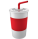
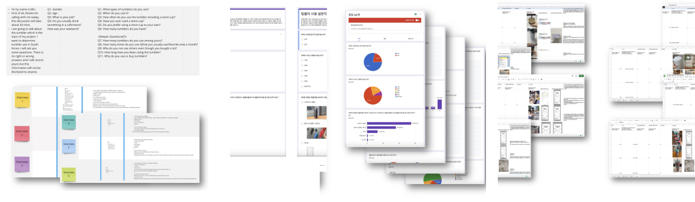
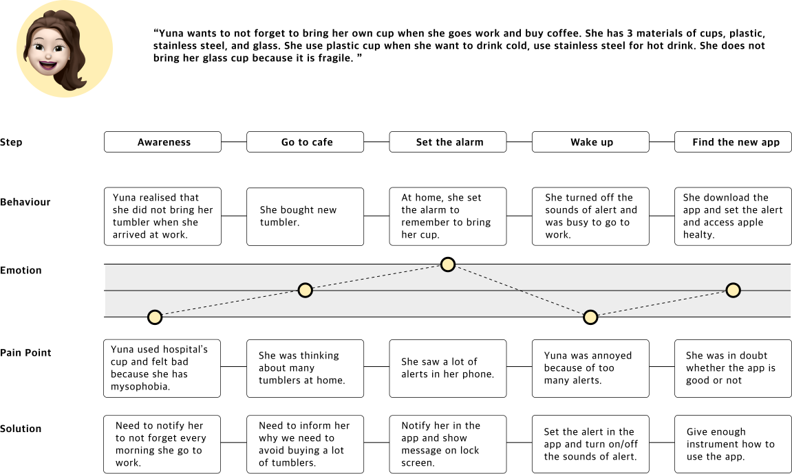

Ncup
Is it really for the environment?
School Assignment
Role
User Research
UI Design
Prototyping for usability test
Usability Testing
UI Design
Prototyping for usability test
Usability Testing
Overview
In these days, many coffee lovers and companies are interested in protecting environment and making an effort in their own way. Representative one is to use reusable cup. Collecting tumblers of large companies has become the latest trend in Korea. However, other environmental problems such as greenhouse gas emissions occurs as the production of reusable cup is growing. This project is to empower consumers helping them understand how their actions impact the envrionment by monitoring of their frootprint.
Define
Brief
Today, the ideology of consumerism seems utterly dominant in developed socities. People keep consuming products and services even though they do not need it. It has become easier to consume almost everything with just clicking the button online. This project was the UX of convenience. I was allowed to design a way to address the negative impacts of convenience consumerism.
Approach
I approached this project from doing diary studies and exploring my consumerism. I found that I consume coffee a lot and narrowed down my resarch to consumering coffee. While research about coffee, I observed Korean people were participating the environmental campaign and were crazy at receiving the reward which was plastic reusable cup. It inspried me to do further research.
Research
Research Methods : 1:1 Interviews, Questionnaire, Diary Studies

“I have each plastic, stainless steel and glass cup with different uses.”
“I love to collect tumblers so I dispose of others anually because
I have too many tumblers.”
“I usually forget to bring
my reusable cup when I go out.”
“I firstly bought tumblers in franchise cafe. I and my friend have waited in front of the store since 4 a.m. to buy the limited cup when cafe release seasons collections of tumblers.”
“I use tumblers to get rewards
in cafe.”
*Answers are based on survey and questionnaires
Target Research
Most Korean people have portable reusable cups and they have dirverse products with different uses such as hot/cold drink. They try to bring their own cups when they go out in order to protect environment and to get incentives, but it is hard and tiresome for them to take them in busy morning. Collecting famous franchise cafes’ tumblers became a trend for yourger people. Most of them first experienced using tumbler through buying for following trend or present. Brand image is important and people want some unique, special and limited items, and accrordignly cups are re-sold with higher price.
Market Research & Making a Report


‘Is consuming reusable cup really for the environment?’
‘What should we do to not forget good purpose of using it?’
‘How can we do not blame or shame individuals but empower them to help positively support changes of consumerism?’
Insight
Starbucks Korea, which has the largest number of stores in the world, has a very high participation rate of Koreans in its annual environmental campaign. They often give a reusable cup if they participate within a certain period of time. However, young Koreans are sensitive to trends and limited sales, so they focus on receiving cups rather than environmental protection. I think good changes will be possible if good intentions are informed to people on a regular basis, not on a temporary basis.
UX Challenge
I proposed an app for those who purchase and use the reusable cup. The app introduces why users should reduce their purchases of reusable cups, and encourages to use the cups they already have. It allows them to change gradually without blaming their purchasing behavior, and give incentives to the trend so that their morale does not decrease.
Analysis
Persona
Journey Map

Design
Core Needs-Function-Design

Workflow
Wireframe
Stakeholder map of Ncup project